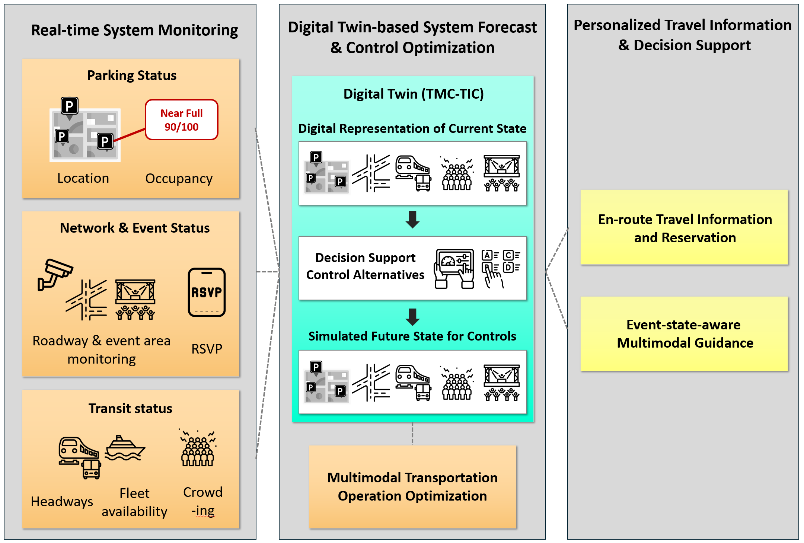
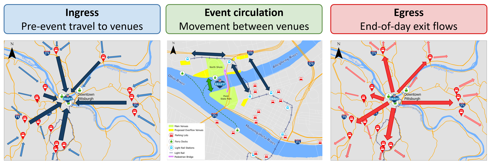
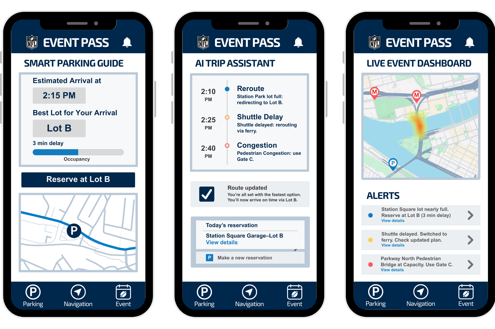
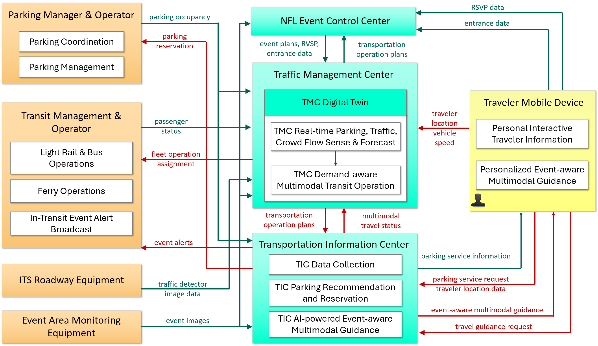

Project information
- Category: National Competition — NOCoE / ITS JPO / ITE
- Team: Co-Captain of a 7-member University of Michigan team
- Advisors: Dr. Neda Masoud; Tony Kratofil, PE, HNTB
- Partners: AECOM, City of Detroit, MDOT, Pittsburgh Downtown Partnership, Pittsburgh Regional Transit, SMART
The Problem
Special events like the NFL Draft bring surges in travel demand that overwhelm a city's normal capacity—and Pittsburgh's 2026 Draft is a particularly hard case: a multi-day event split across two river-separated venues, expecting 500,000–700,000 attendees against only ~16,000 downtown parking spaces, layered on top of regular weekday commuter traffic. Left to unfold organically, fragmented traveler information, uncoordinated individual decisions, and fixed transit schedules turn multimodal options that could absorb this demand into a bottleneck instead.
Approach
As co-lead, I helped guide our team in designing an integrated Concept of Operations built around three components working together: a digital twin that senses and forecasts system conditions in real time, a dynamic transit system that reallocates buses, light rail, and ferries as demand shifts across event phases, and an AI-powered traveler app that turns those forecasts into personalized parking and routing guidance—all delivered through the NFL's existing event app so no new adoption barrier is needed.

Component 1—Digital Twin: senses real-time conditions, simulates control options, and drives the other two components.

Component 2—Dynamic Multimodal Transit: transit capacity shifts across ingress, circulation, and egress phases instead of running a fixed schedule.

Component 3—AI-Powered Guidance: personalized parking reservations, live rerouting, and crowd alerts delivered through the NFL app.
Key Results
- Selected as National Champion among competing university teams, evaluated by transportation agency and industry judges
- Built a full technical architecture connecting parking operators, transit agencies, ITS roadway equipment, and traveler devices through a shared Traffic Management Center and Transportation Information Center
- Design was grounded in a real comparable case: the 2024 NFL Draft in Detroit, where multimodal information sharing drove record-high transit ridership
- Proposal briefed to and developed alongside real public-sector and industry stakeholders (MDOT, Pittsburgh Regional Transit, AECOM, HNTB)

Technical architecture — how parking, transit, roadway sensors, and traveler devices connect through the TMC and TIC to make the three components work as one system.
Why It Matters
This project is the clearest evidence I have of thinking at a systems level under real institutional constraints—balancing the interests of transit agencies, city government, private operators, and the traveling public. Alongside Sungho Lim, I co-led a team of graduate and undergraduate students through the full design process under competition deadline pressure, then presented our findings at ITE to working transportation professionals.